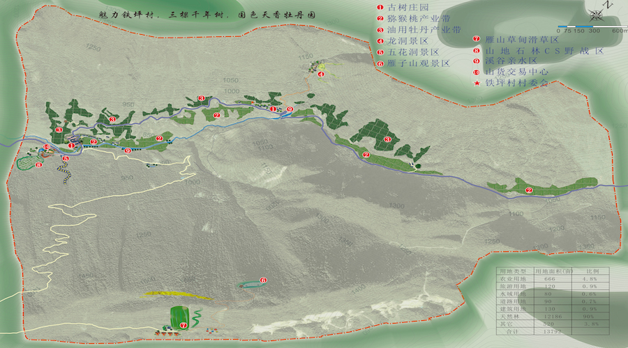
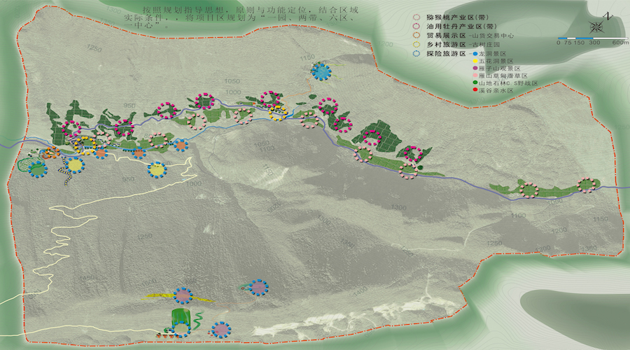
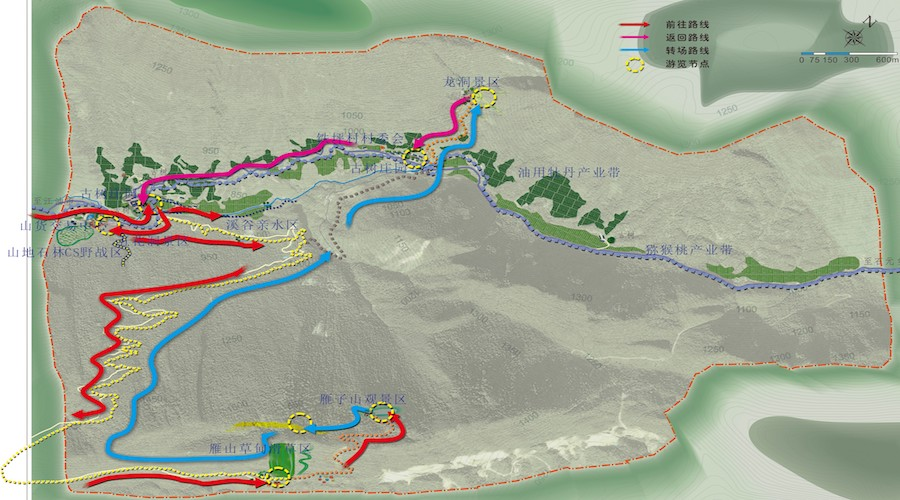
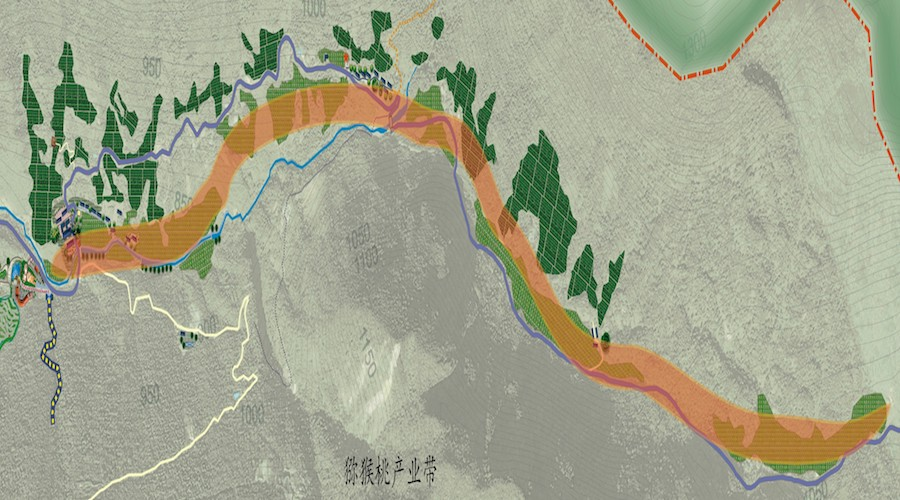

项目位于江油市东北，距市中心93公里。北与雁门镇、南与马脚镇、东与青川县竹园镇、南与二郎庙接壤。属高山地形山区村。利用该规划区丰富的旅游资源以及便捷的交通，将石元乡铁坪村规划成一个农旅融合的产业。
该项目被规划成为“一园、两带、六区、一中心”。分别是古树庄园；猕猴桃产业带和油用牡丹产业带；龙洞景区，五花洞景区，雁子山观景区，雁山草甸滑草区，山石林地CS野战区，溪谷亲水区；山货交易中心。景观优化采用斑块，廊道，基质基本模型，以农业为载体，集休闲娱乐、乡村度假、旅游购物、绿色消费返璞归真等功能为一体的新型生态旅游，实现生产、生活、生趣（休闲观光）三“生”合一，第一产业、第二产业、第三产业三“产”联动。
   